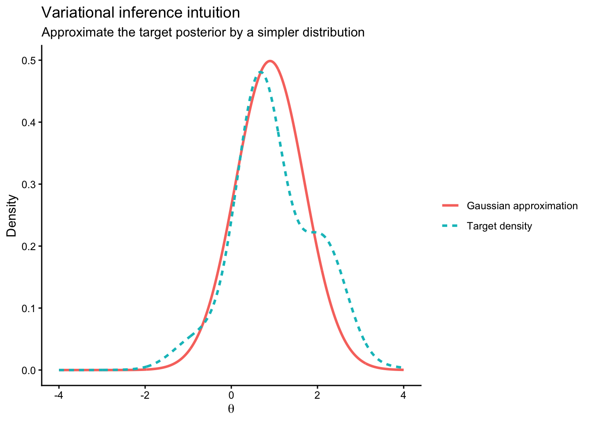
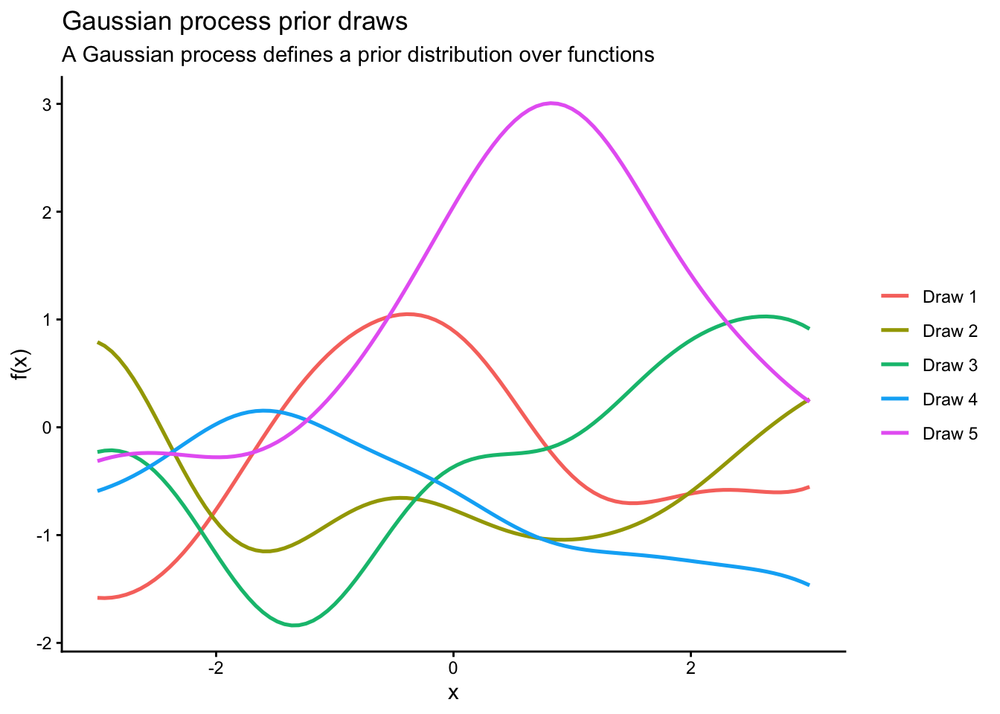

In the previous lecture, we discussed several connections between Bayesian statistics and machine learning, focusing on
Bayesian linear regression,
regularization as prior modeling,
and posterior predictive uncertainty.
In this lecture, we continue that theme by looking at two major directions in modern Bayesian statistics:
modern Bayesian computation, especially variational inference;
modern Bayesian modeling, especially Gaussian processes.
The main message of this lecture is:
Modern Bayesian statistics is not only about priors and posteriors. It is also about how to compute them efficiently and how to build flexible probabilistic models.
Roadmap
In this lecture we will study:
why classical MCMC is not always enough,
variational inference as optimization-based Bayesian approximation,
Gaussian processes as priors over functions,
why these ideas matter in modern statistics and machine learning.
Why do we need modern Bayesian computation?
So far in this course, we have focused heavily on models where posterior inference is tractable or can be handled using Gibbs sampling.
This works very well in many classical Bayesian models. However, in modern applications, we often encounter:
high-dimensional parameter spaces,
nonconjugate models,
large datasets,
complex posterior geometry.
In such situations, exact posterior sampling may be slow or difficult.
Note
The main computational challenge in Bayesian statistics is:
How do we approximate a posterior distribution accurately enough, but also efficiently enough, for modern problems?
A short review of MCMC
Markov chain Monte Carlo methods approximate posterior distributions by generating dependent samples
\[
\phi^{(1)},\dots,\phi^{(S)}
\]
from a Markov chain whose stationary distribution is the target posterior.
This is a powerful idea, but MCMC can become computationally expensive when:
the chain mixes slowly,
the dimension is large,
the likelihood is costly to evaluate,
or we need to analyze many datasets quickly.
Beyond classical MCMC
Modern Bayesian computation includes methods such as
Hamiltonian Monte Carlo,
variational inference,
stochastic gradient MCMC,
approximate Bayesian computation.
In this lecture, we focus on variational inference, because it is one of the clearest examples of the connection between Bayesian computation and machine learning.
Variational inference
Core idea
Suppose the true posterior is
\[
p(\theta \mid y),
\]
but this distribution is hard to compute or sample from directly.
Instead of drawing MCMC samples, variational inference approximates the posterior by choosing a simpler distribution
\[
q(\theta)
\]
from a family of tractable distributions, and then finding the member of that family that is “closest” to the posterior.
Maximizing the ELBO is equivalent to minimizing the KL divergence.
Interpretation of the ELBO
The ELBO has two parts:
a fit term, which encourages \(q\) to place mass where the joint density \(p(y,\theta)\) is large;
an entropy term, which discourages \(q\) from collapsing too much.
This balance is similar in spirit to many machine learning optimization problems, where we balance fit and complexity.
Mean-field variational inference
A common simplification is to assume that the approximation factorizes:
\[
q(\theta)
=
\prod_{j=1}^p q_j(\theta_j).
\]
This is called the mean-field approximation.
It makes optimization easier, but it can underestimate posterior dependence.
Warning
A common limitation of variational inference is that it may underestimate posterior uncertainty, especially when the true posterior has strong dependence.
Variational inference versus MCMC
The table below summarizes the broad comparison.
Feature
MCMC
Variational inference
Main idea
Sampling
Optimization
Accuracy
Often high
Approximate
Speed
Can be slow
Often faster
Output
Samples from posterior
Approximate distribution
Uncertainty quantification
Usually strong
May be underestimated
A simple variational approximation example
The following code illustrates a very simple variational-style approximation idea. We compare a target density with a Gaussian approximation.
This is not a full general-purpose VI algorithm. The goal is only to build intuition.
library(ggplot2)theta_grid <-seq(-4, 4, length.out =1000)# Example target density: a non-Gaussian posterior-like shapetarget_unnorm <-exp(-0.5* (theta_grid -1)^2) * (1+0.3*sin(3* theta_grid))target_unnorm[target_unnorm <0] <-0target_density <- target_unnorm /sum(target_unnorm) / (theta_grid[2] - theta_grid[1])# A simple Gaussian approximationq_density <-dnorm(theta_grid, mean =0.9, sd =0.8)df_vi <-data.frame(theta =rep(theta_grid, 2),density =c(target_density, q_density),curve =factor(rep(c("Target density", "Gaussian approximation"),each =length(theta_grid))))ggplot(df_vi, aes(x = theta, y = density, color = curve, linetype = curve)) +geom_line(linewidth =1) +labs(title ="Variational inference intuition",subtitle ="Approximate the target posterior by a simpler distribution",x =expression(theta),y ="Density",color =NULL,linetype =NULL ) +theme_classic()

Figure 1: A target density and a simple Gaussian approximation.
Takeaway from variational inference
Variational inference is attractive because it scales well and turns Bayesian inference into optimization. This makes it very natural for modern machine learning.
At the same time, we should remember:
it is an approximation,
its quality depends on the approximation family,
and it may not capture all posterior dependence or uncertainty.
Gaussian processes
We now turn to a different modern Bayesian idea: Gaussian processes.
Whereas variational inference is mainly about computation, Gaussian processes are mainly about modeling.
Motivation
In regression, we often assume a parametric relationship such as
Large \(\ell\) leads to smoother functions. Small \(\ell\) allows more rapid local variation.
Why Gaussian processes are Bayesian
Gaussian process regression is Bayesian because:
we specify a prior over functions,
data update this prior to a posterior over functions,
prediction is based on the posterior predictive distribution.
So the output is not just one estimated curve. It is a posterior distribution over plausible curves.
Simulating prior draws from a Gaussian process
The following example illustrates the idea of a prior over functions.
library(MASS)library(ggplot2)set.seed(8310)x_grid <-seq(-3, 3, length.out =100)kernel_se <-function(x1, x2, alpha =1, ell =1) { alpha^2*exp(-(outer(x1, x2, "-")^2) / (2* ell^2))}K <-kernel_se(x_grid, x_grid, alpha =1, ell =1)K <- K +1e-8*diag(length(x_grid)) # numerical stabilitygp_draws <- MASS::mvrnorm(5, mu =rep(0, length(x_grid)), Sigma = K)gp_df <-do.call(rbind, lapply(1:5, function(j) {data.frame(x = x_grid, y = gp_draws[j, ], draw =factor(paste("Draw", j)))}))ggplot(gp_df, aes(x = x, y = y, color = draw)) +geom_line(linewidth =0.9) +labs(title ="Gaussian process prior draws",subtitle ="A Gaussian process defines a prior distribution over functions",x ="x",y ="f(x)",color =NULL ) +theme_classic()

Figure 2: Draws from a Gaussian process prior.
Why Gaussian processes matter
Gaussian processes are important because they combine:
flexible nonlinear regression,
uncertainty quantification,
elegant Bayesian updating.
They are widely used in:
spatial statistics,
Bayesian optimization,
surrogate modeling,
computer experiments,
probabilistic machine learning.
Gaussian processes and multivariate Gaussian distributions
A Gaussian process is built from multivariate Gaussian distributions. If we evaluate the unknown function at finitely many input points, then the resulting vector is multivariate Gaussian.